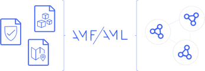

Align the semantics of different formats and link documents in a single unified metadata graph.
Use libraries to parse, generate, validate, publish, store and query metadata defined with AML.
AML is compliant with W3C standards for semantics, linked data and the related ecosystem of tools.
Metadata is a key element in any organization. Unfortunately, different formats and lack of explicit links keep metadata from different systems and tools disconnected and incompatible.
Browse VocabulariesAML (Anything Modeling Language) can be used to describe existing YAML/JSON metadata formats or design new ones, providing common semantics and linking the information into a single unified graph of metadata.

AMF is an open-source programming framework, capable of parsing, generating and validating metadata documents defined using AML. It can be used as a library in JVM or JavaScript projects, or as a stand-alone command-line tool.
The modular design of AMF facilitates creating plugins capable of parsing other metadata syntaxes not defined by AML.
Install AMF